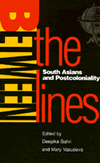
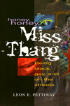
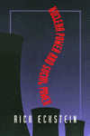

| 
|
Abortion
Between Freedom and Necessity
Hadley, Janet
This new paperback contains an epilogue that discusses changes
and events that occurred since 1996
256 pp • 6x9 • Fall 1996
cloth 1-56639-506-2
EAN 978-1-56639-506-9
|
| 
|
Between
the Lines
South Asians and Postcoloniality
Bahri, Deepika, and Mary Vasudeva
Intense and sometimes contentious debates about South Asian identity
384 pp • 6x9 • Fall 1996
paper 1-56639-468-6
EAN 978-1-56639-468-0
cloth 1-56639-467-8
EAN 978-1-56639-467-3
|
|
|
Black
Corporate Executives
The Making and Breaking of a Black Middle Class
Collins, Sharon M.
A revealing study of the promising entry of Blacks into managerial
ranks in corporations and the disappointing trend that tracked them
into increasingly vulnerable jobs
216 pp • 5.5x8.25 • Fall 1996
paper 1-56639-474-0
EAN 978-1-56639-474-1
cloth 1-56639-473-2
EAN 978-1-56639-473-4
|
| 
|
Family
Ties
Enduring Relations between Parents and Their Grown Children
Logan, John R., and Glenna D. Spitze
A challenging look at the way relationships between parents and
their adult children remain strong in the midst of social change
304 pp • 6x9 • Fall 1996
paper 1-56639-472-4
EAN 978-1-56639-472-7
cloth 1-56639-471-6
EAN 978-1-56639-471-0
|
|
|
Feminism
and Criminology
Naffine, Ngaire
A concise and accessible account of the contributions of feminist
thinking to the study of crime
256 pp • 6x9 • Fall 1996
paper 1-56639-508-9
EAN 978-1-56639-508-3
cloth 1-56639-507-0
EAN 978-1-56639-507-6
|
|
|
Hearts
and Minds
The Controversy Over Laboratory Animals
Groves, Julian McAllister
Thought-provoking arguments and behaviors on both sides of the
controversy surrounding biomedical research on animals
240 pp • 5.5x8.25 • Fall 1996
paper 1-56639-476-7
EAN 978-1-56639-476-5
cloth 1-56639-475-9
EAN 978-1-56639-475-8
|
|
|
Hollywood's
New Deal
Muscio, Giuliana
A ground-breaking exploration of the entertainment industry's role
in promoting New Deal ideology in the thirties
320 pp • 6x9 • Fall 1996
paper 1-56639-496-1
EAN 978-1-56639-496-3
cloth 1-56639-495-3
EAN 978-1-56639-495-6
|
| 
|
Honey,
Honey, Miss Thang
Being Black, Gay, and on the Streets
Pettiway, Leon E.
Accounts of five gay, black, drug-using transvestites who struggle
to create realities that are not mired in misery and deviance but
proclaim their membership in the human family
320 pp • 6x9 • Fall 1996
paper 1-56639-498-8
EAN 978-1-56639-498-7
cloth 1-56639-497-X
EAN 978-1-56639-497-0
|
|
|
It’s
Our Military, Too!
Women and the U.S Military
Stiehm, Judith Hicks
Women serve in, help finance, and give permission for the activities
of this country's armed forces, yet those who serve remain unknown
and those who are accountable often forget their responsibility
352 pp • 6x9 • Fall 1996
paper 1-56639-456-2
EAN 978-1-56639-456-7
cloth 1-56639-455-4
EAN 978-1-56639-455-0
|
|
|
Kellogg's
Six-Hour Day
Hunnicutt, Benjamin Kline
In an era of corporate downsizing and threats of a "jobless future,"
this book is a wake-up call to recover the vision of life beyond
necessity that allows workers time to invest in family, community,
and a democratic future
288 pp • 6x9 • Fall 1996
paper 1-56639-448-1
EAN 978-1-56639-448-2
cloth 1-56639-447-3
EAN 978-1-56639-447-5
|
|
|
Mayan
Drifter
Chicano Poet in the Lowlands of America
Herrera, Juan
Felipe
The internal struggle of a Chicano poet returning to the Mexican
homeland only to find his Indian realities distorted and exploited
330 pp • 6x9 • Fall 1996
paper 1-56639-482-1
EAN 978-1-56639-482-6
cloth 1-56639-481-3
EAN 978-1-56639-481-9
|
|
|
Merengue
Dominican Music and Dominican Identity
Austerlitz, Paul, and Robert Farris Thompson
A fascinating examination of the social history of merengue dance
music and its importance as a social and cultural symbol
224 pp • 6x9 • Fall 1996
paper 1-56639-484-8
EAN 978-1-56639-484-0
cloth 1-56639-483-X
EAN 978-1-56639-483-3
|
|
|
Militant
Labor in the Philippines
West, Lois A.
A comprehensive examination of the contemporary militant labor
movement in the Philippines
256 pp • 6x9 • Fall 1996
cloth 1-56639-491-0
EAN 978-1-56639-491-8
|
|
|
New
Left, New Right, and the Legacy of the Sixties
Lyons, Paul
A controversial reworking of the sixties and its ongoing impact
on American politics and culture
256 pp • 5.5x8.25 • Fall 1996
paper 1-56639-478-3
EAN 978-1-56639-478-9
cloth 1-56639-477-5
EAN 978-1-56639-477-2
|
|
|
No
Mercy
How Conservative Think Tanks and Foundations Changed America's
Social Agenda
Stefancic, Jean, Richard Delgado, and Mark Tushnet
The shocking truth about how conservative think tanks and foundations
have seized the moral high ground and sharply shifted America's
political agenda to the Right
208 pp • 6x9 • Fall 1996
cloth 1-56639-469-4
EAN 978-1-56639-469-7
|
| 
|
Nuclear
Power and Social Power
Eckstein, Rick
A critical examination of the Shoreham and Seabrook nuclear power
plants and the way expensive corporate initiatives purported as
good for social "progress" or "economic growth" actually serve the
parochial interests of powerful organizations and classes
208 pp • 5.5x8.25 • Fall 1996
paper 1-56639-486-4
EAN 978-1-56639-486-4
cloth 1-56639-485-6
EAN 978-1-56639-485-7
|
| 
|
The
Phillies Reader
Orodenker, Richard, ed.
A rich collection of baseball literature that chronicles the dramatic
history of the Philadelphia Phillies
302 pp • 6x9 • Fall 1996
cloth 1-56639-503-8
EAN 978-1-56639-503-8
|
|
|
Poisoned
Ivy
Lesbian and Gay Academics Confronting Homophobia
McNaron, Toni A.H.
A startling look at the way academia opens its arms to gay and
lesbian scholarship but not to gay and lesbian scholars
256 pp • 6x9 • Fall 1996
paper 1-56639-488-0
EAN 978-1-56639-488-8
cloth 1-56639-487-2
EAN 978-1-56639-487-1
|
|
|
Puerto
Rican Women and Work
Bridges in Transnational Labor
Ortiz, Altagracia
A comprehensive collection of interdisciplinary essays that traces
the historical connections between women, work, and the different
stages of capitalism in Puerto Rico
272 pp • 6x9 • Fall 1996
paper 1-56639-451-1
EAN 978-1-56639-451-2
cloth 1-56639-450-3
EAN 978-1-56639-450-5
|
|
|
Rain
Without Thunder
The Ideology of the Animal Rights Movement
Francione, Gary L.
A powerful re-examination of the animal rights movement and its
shortcomings
288 pp • 6x9 • 2002
paper 1-56639-461-9
EAN 978-1-56639-461-1
cloth 1-56639-460-0
EAN 978-1-56639-460-4
|
|
|
Return
of the Indian
Conquest and Revival in the Americas
Wearne, Phillip, and Rigoberta Menchu
"After 500 years of injustice, 500 years of night, we are moving
into the light of a new era for our peoples. We believe that our
voices will make themselves heard, that you will listen to us."
264 pp • 7.5x9.5 • Fall 1996
paper 1-56639-501-1
EAN 978-1-56639-501-4
cloth 1-56639-500-3
EAN 978-1-56639-500-7
|
| 
|
Swingin'
at the Savoy
The Memoir of a Jazz Dancer
Miller, Norma, and Evette Jensen
A celebration of a life of dancing the Lindy Hop
304 pp • 6x9 • Fall 1996
cloth 1-56639-494-5
EAN 978-1-56639-494-9
|
|
|
Teen
Mothers and the Revolving Welfare Door
Harris, Kathleen Mullan, and Frank F. Furstenberg
A comprehensive study of teen mothers and their patterns of entering
and leaving the welfare system
224 pp • 5.5x8.25 • Fall 1996
cloth 1-56639-499-6
EAN 978-1-56639-499-4
|
|
|
The
Unnatural Lottery
Character and Moral Luck
Card, Claudia
A philosophical defense of the concept of moral luck as mediated
by gender, race, social class, and sexual passions and an exploration
of its implications for responsibility
232 pp • 5.5x8.25 • Fall 1996
paper 1-56639-453-8
EAN 978-1-56639-453-6
cloth 1-56639-452-X
EAN 978-1-56639-452-9
|
|
|
Women
Reformed, Women Empowered
Poor Mothers and the Endangered Promise of Head Start
Ames, Lynda J., and Jeanne Ellsworth
Revealing stories about the ways in which social programs help
and harm women struggling to change their lives
264 pp • 5.5x8.25 • Fall 1996
paper 1-56639-493-7
EAN 978-1-56639-493-2
cloth 1-56639-492-9
EAN 978-1-56639-492-5
|
|
|
Working
in the Service Society
Macdonald, Cameron Lynne, and Carmen J. Sirianni
A comprehensive analysis of the experiences of workers in various
service-sector occupations to explore how the shift to a service-based
economy fundamentally transforms the nature of work and the challenges
of workplace empowerment in contemporary America
376 pp • 6x9 • Fall 1996
paper 1-56639-480-5
EAN 978-1-56639-480-2
cloth 1-56639-479-1
EAN 978-1-56639-479-6
|